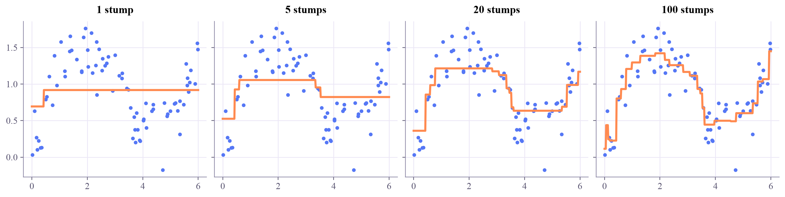
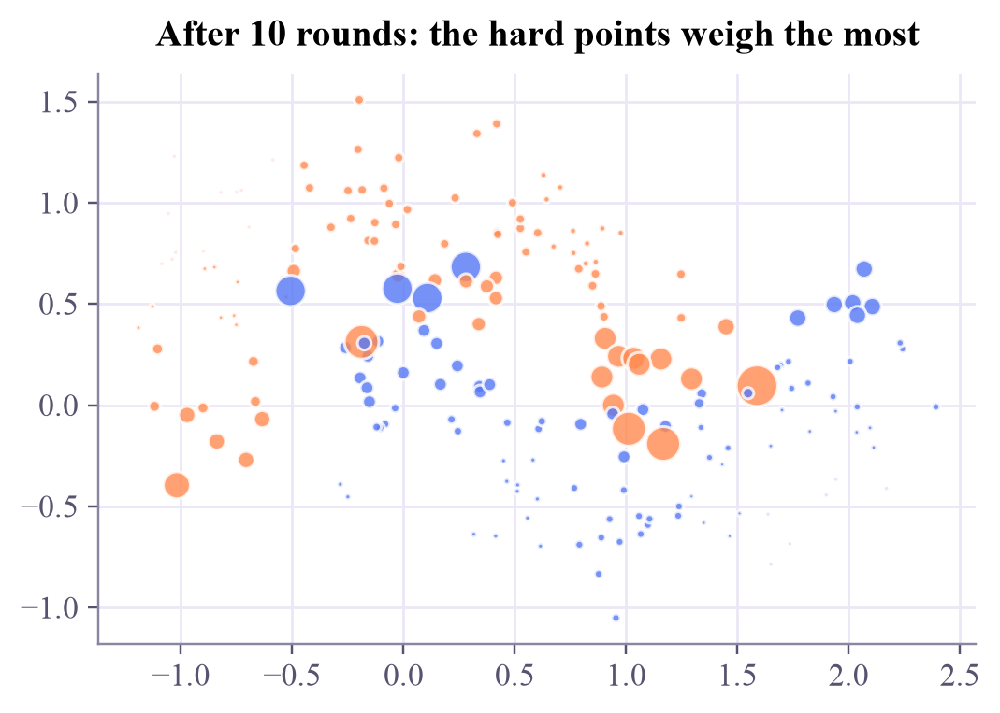
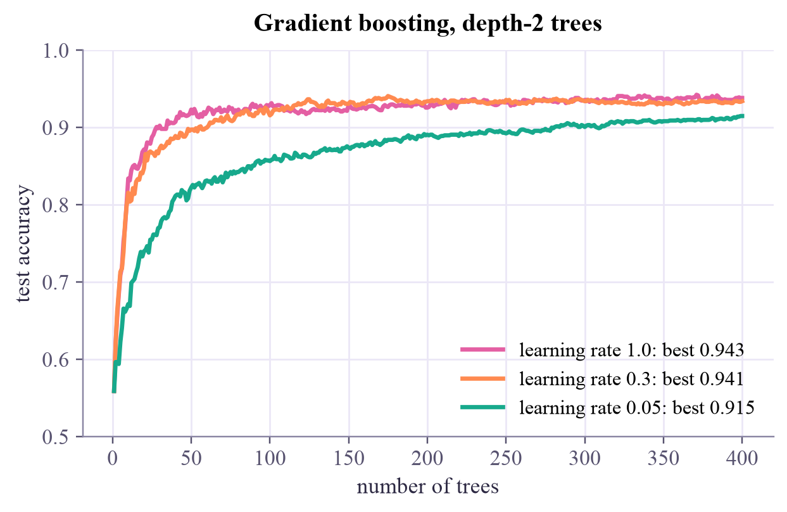

Machine Learning
 about 10 min
about 10 min ml-w8d2.ipynb
ml-w8d2.ipynb
Boosting: trees that fix each other's mistakes
A forest grows its trees side by side and lets them vote. Boosting grows them one after another, each one fixing what the team still gets wrong. On tables of data, it is often the strongest model there is.
In this lesson you will
- Explain boosting as a team of small models, each trained on the team's remaining errors
- Run gradient boosting by hand, and AdaBoost's reweighting idea
- Balance the learning rate, the number of trees and their depth, and know the fast libraries
Warm-up
1 minMany weak learners

In 1988, Michael Kearns asked a cheeky question: if you have a model that's only a little better than guessing, can you combine many of them into a model that's excellent? The answer, boosting, turned out to be one of the most useful ideas in machine learning. Week 3 gave it one cell; today it gets the whole lesson.
Big idea
4 minFit what's left over
Start with the simplest guess: the average. Then repeat:
- Compute the residuals: what the team still gets wrong, .
- Train a small tree (often only one or two questions deep) to predict those residuals.
- Add it to the team with a small weight, the learning rate : .
Each tree is a weak learner: on its own it's crude. But every one of them attacks exactly the errors that are left, so the team keeps improving. Why "gradient" boosting? For squared error, the residual is the negative gradient of the loss with respect to the prediction. So each tree is one step of gradient descent (week 2), taken in the space of functions instead of weights. Swap in another loss, such as the cross-entropy, and the same recipe classifies.
AdaBoost, the original boosting algorithm (Freund and Schapire, 1995), does the same with weights: after every round, the misclassified examples become heavier, so the next stump has to care about them. Good stumps get a bigger say in the final vote.
Random forest (bagging)
Deep trees, grown side by side on random resamples. Averaging them lowers the variance. More trees never hurt, and it's hard to tune badly.
Boosting
Shallow trees, grown one after another. Each one lowers the bias a bit more. Too many trees, or too big a learning rate, and it starts fitting the noise: watch a validation set.
Three knobs work together: a smaller learning rate needs more trees but usually ends a little better; deeper trees learn faster but overfit sooner. Libraries such as XGBoost, LightGBM and scikit-learn's HistGradientBoostingClassifier make all this fast on millions of rows, and stop by themselves with early stopping.
Boosting adds small trees one at a time, each trained on what the team still gets wrong: gradient descent, one tree per step.
Play
2 minAdd trees one by one
Left: the team's curve (orange) through the training points (filled) and test points (rings). Right: the residuals the newest tree was trained on, the tree itself (green), and the small step it actually adds (dashed).
Try this
Press Add 1 tree a few times and watch each tree chase the biggest leftovers. Then add trees until about 200 with learning rate 1 and depth 3: training error keeps dropping, but does the test error? Start over with learning rate 0.1 and depth 1: slower, but steadier.
Code
2 minBoosting in code
The notebook for this lessonEvery code cell below, with what it printed, is in
ml-w8d2.ipynb. To change the code and run it yourself, open the notebook in Google Colab (free, in your browser) or download it for your own Jupyter.import numpy as np
import matplotlib.pyplot as plt
from sklearn.tree import DecisionTreeRegressor
rng = np.random.default_rng(0)
x = np.sort(rng.uniform(0, 6, 80))
y = np.sin(x) + 0.3 * x + rng.normal(0, 0.25, 80)
X = x[:, None] # scikit-learn wants a 2D array: (samples, features)
def boost(X, y, rounds, lr=0.3, depth=1):
"""Gradient boosting for squared error: every tree fits the current residuals."""
pred = np.full(len(y), y.mean()) # start from the average
trees = []
for _ in range(rounds):
residual = y - pred # what the team still gets wrong
tree = DecisionTreeRegressor(max_depth=depth).fit(X, residual)
pred += lr * tree.predict(X) # join with a small weight
trees.append(tree)
return y.mean(), trees
grid = np.linspace(0, 6, 400)[:, None]
fig, axes = plt.subplots(1, 4, figsize=(13, 3.2), sharey=True, layout="constrained")
for ax, rounds in zip(axes, [1, 5, 20, 100]):
start, trees = boost(X, y, rounds)
curve = start + 0.3 * sum(t.predict(grid) for t in trees)
ax.scatter(x, y, s=12, color="#5577f5")
ax.plot(grid[:, 0], curve, color="#ff8a50", lw=2.5)
ax.set_title(f"{rounds} stump{'s' if rounds > 1 else ''}")
plt.show()What it printed in the notebook
from sklearn.datasets import make_moons
from sklearn.tree import DecisionTreeClassifier
Xm, ym = make_moons(n_samples=200, noise=0.25, random_state=1)
s = np.where(ym == 1, 1, -1) # AdaBoost likes labels -1 and +1
w = np.full(len(s), 1 / len(s)) # every point starts equally important
stumps, alphas = [], []
for _ in range(10):
stump = DecisionTreeClassifier(max_depth=1).fit(Xm, s, sample_weight=w)
miss = stump.predict(Xm) != s
err = w[miss].sum()
alpha = 0.5 * np.log((1 - err) / err) # a better stump gets a bigger say
w *= np.exp(alpha * np.where(miss, 1, -1)) # mistakes get heavier, the rest lighter
w /= w.sum()
stumps.append(stump)
alphas.append(alpha)
score = sum(a * st.predict(Xm) for a, st in zip(alphas, stumps))
print(f"training accuracy after 10 rounds: {np.mean(np.sign(score) == s):.2f}")
plt.figure(figsize=(5.5, 3.6))
plt.scatter(Xm[:, 0], Xm[:, 1], s=4000 * w, c=np.where(ym == 0, "#ff8a50", "#5577f5"), alpha=0.8)
plt.title("After 10 rounds: the hard points weigh the most")
plt.show()What it printed in the notebook
training accuracy after 10 rounds: 0.92

from sklearn.datasets import make_hastie_10_2
from sklearn.model_selection import train_test_split
from sklearn.ensemble import GradientBoostingClassifier, RandomForestClassifier
Xh, yh = make_hastie_10_2(n_samples=4000, random_state=0)
Xh_tr, Xh_te, yh_tr, yh_te = train_test_split(Xh, yh, test_size=0.3, random_state=0)
print(f"one deep tree: {DecisionTreeClassifier(random_state=0).fit(Xh_tr, yh_tr).score(Xh_te, yh_te):.3f}")
print(f"forest of 300 trees: {RandomForestClassifier(n_estimators=300, random_state=0).fit(Xh_tr, yh_tr).score(Xh_te, yh_te):.3f}")
plt.figure(figsize=(6.4, 3.6))
for lr, color in [(1.0, "#e45fa3"), (0.3, "#ff8a50"), (0.05, "#17a98c")]:
gb = GradientBoostingClassifier(n_estimators=400, learning_rate=lr, max_depth=2, random_state=0).fit(Xh_tr, yh_tr)
acc = [np.mean(p == yh_te) for p in gb.staged_predict(Xh_te)]
plt.plot(range(1, 401), acc, color=color, label=f"learning rate {lr}: best {max(acc):.3f}")
plt.xlabel("number of trees")
plt.ylabel("test accuracy")
plt.ylim(0.5, 1)
plt.legend()
plt.title("Gradient boosting, depth-2 trees")
plt.show()What it printed in the notebook
one deep tree: 0.748 forest of 300 trees: 0.873

On this ten-feature problem, one deep tree gets about 75% and a forest about 87%; boosting reaches about 94%. A bigger learning rate gets there in fewer trees; the small one needs many more trees to catch up.
import time
from sklearn.ensemble import HistGradientBoostingClassifier
t0 = time.perf_counter()
hgb = HistGradientBoostingClassifier(max_iter=1000, learning_rate=0.1, early_stopping=True, random_state=0).fit(Xh_tr, yh_tr)
print(f"stopped after {hgb.n_iter_} rounds, in {time.perf_counter() - t0:.1f} s")
print(f"test accuracy: {hgb.score(Xh_te, yh_te):.3f}")What it printed in the notebook
stopped after 231 rounds, in 0.4 s test accuracy: 0.919
Your turn
optionalYour turn: deeper trees or more of them?
Boost trees of depth 1, 2, 3 and 5, and find the best test accuracy for each depth and the round where it happened.
for depth in [1, 2, 3, 5]:
gb = None # TODO: fit a GradientBoostingClassifier with this max_depth (random_state=0)
acc = None # TODO: the list of test accuracies after each round, from gb.staged_predict(Xh_te)
print(f"depth {depth}: best accuracy {None} after {None} trees")Need a hint?
Copy the loop from cell 3: acc = [np.mean(p == yh_te) for p in gb.staged_predict(Xh_te)], then max(acc) and np.argmax(acc) + 1.
Show a solution
for depth in [1, 2, 3, 5]:
gb = GradientBoostingClassifier(n_estimators=300, learning_rate=0.1, max_depth=depth, random_state=0).fit(Xh_tr, yh_tr)
acc = [np.mean(p == yh_te) for p in gb.staged_predict(Xh_te)]
print(f"depth {depth}: best accuracy {max(acc):.3f} after {int(np.argmax(acc)) + 1} trees")
print("Stumps learn slowly (still climbing at 300), depth 3 is best, and depth 5 peaks earlier and lower:")
print("deeper trees learn faster per round, but start fitting the noise sooner.")What it printed in the notebook
depth 1: best accuracy 0.887 after 280 trees depth 2: best accuracy 0.922 after 288 trees depth 3: best accuracy 0.931 after 264 trees depth 5: best accuracy 0.917 after 198 trees Stumps learn slowly (still climbing at 300), depth 3 is best, and depth 5 peaks earlier and lower: deeper trees learn faster per round, but start fitting the noise sooner.
Check yourself
1 minQuick check
Question 1 of 3
What does each new tree in gradient boosting learn to predict?
Question 2 of 3
Your boosted model's training error keeps falling, but its validation error has started to rise. What now?
Question 3 of 3
Forests and boosting both use many trees. The main difference?
Wrap-up
1 minToday in one sentence
Quantum link
Boosting needs only weak learners, and that makes it interesting for small, noisy quantum models: several studies combine shallow quantum classifiers with AdaBoost-style weighting. Whenever a QML paper tests on tabular data, gradient boosting is the classical baseline to beat (Quantum ML, week 4).
Go deeper (optional)
ISLP section 8.2.3 (boosting) and 8.2.5 (a comparison with bagging and forests). The originals: Freund and Schapire, "A decision-theoretic generalization of on-line learning and an application to boosting" (1997), and Friedman, "Greedy function approximation: a gradient boosting machine" (Annals of Statistics, 2001).
Tomorrow: two more ways to find groups without labels, one that builds a family tree and one that follows dense crowds.

That's the lesson!
Tap the button to save it. Short and steady wins.
Next in Machine LearningHierarchical clustering and DBSCAN
Marked by mistake? Undo